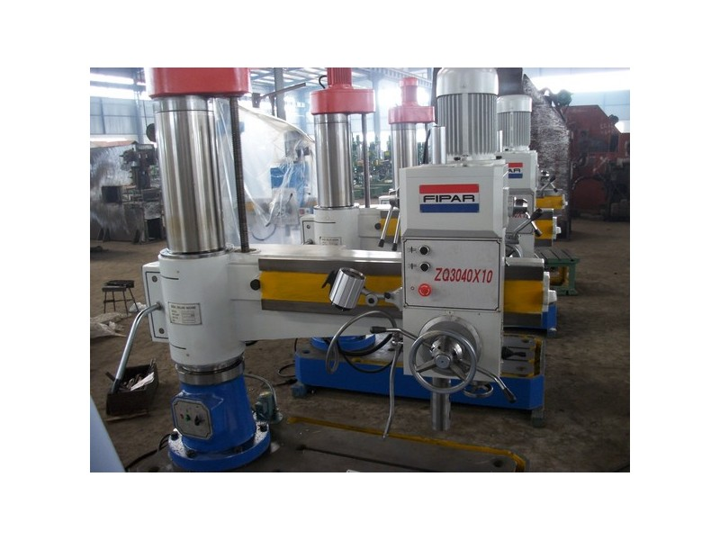
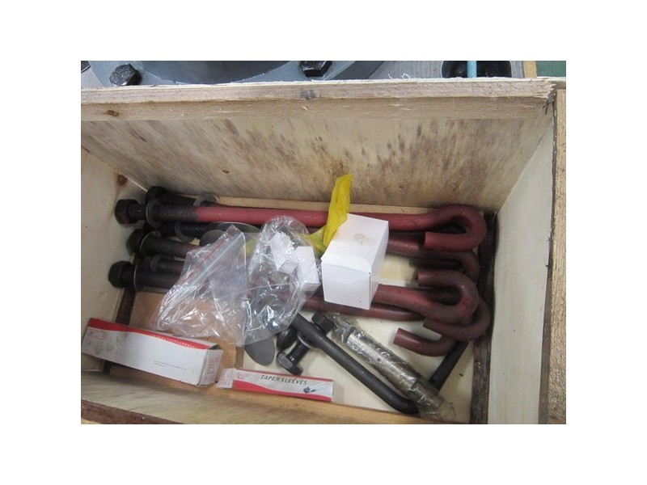
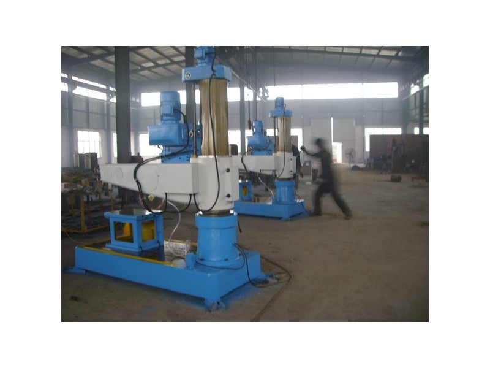

Our C-Frame Presses are available in different models ranging from 20 tons up to 50 tons.
They are easy for any skilled worker or shop operator to use since they have all the features and control over the machine. Having a visibly emergency button, it ensures the safety of the operator at all times.
|  | |
|
|
 |  |